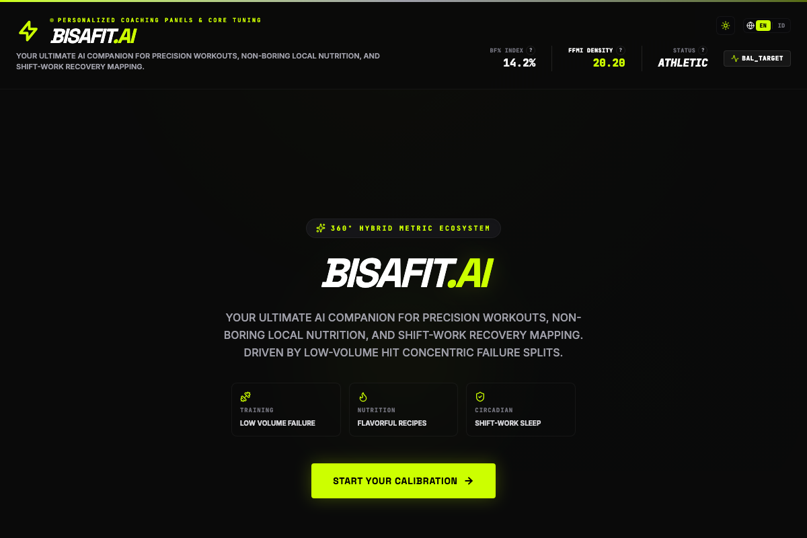

Application Support | Full-Stack Developer
Result-oriented IT professional with 3+ years of enterprise experience in application support and software development, maintaining a 95% SLA. Recently completed intensive international training in Full-Stack Development (MERN/Next.js), Cloud Computing, and AI Implementation.
About Me
I'm a self-driven developer who spent years supporting enterprise systems at Astra International, then took a deliberate career break to level up — deep-diving into Full-Stack Development, AI, and DevSecOps. The result is a blend of production-grade backend discipline and modern frontend craft.
Technical Skills
A mix of enterprise-grade systems knowledge and modern web technologies.
Experience
My professional journey through enterprise IT and self-directed upskilling.

Education & Certifications
A combination of university grounding and intensive, hands-on upskilling programs.
Contact
Open to full-stack, backend, or AI-integrated roles. Happy to chat about opportunities, collaboration, or just tech in general.